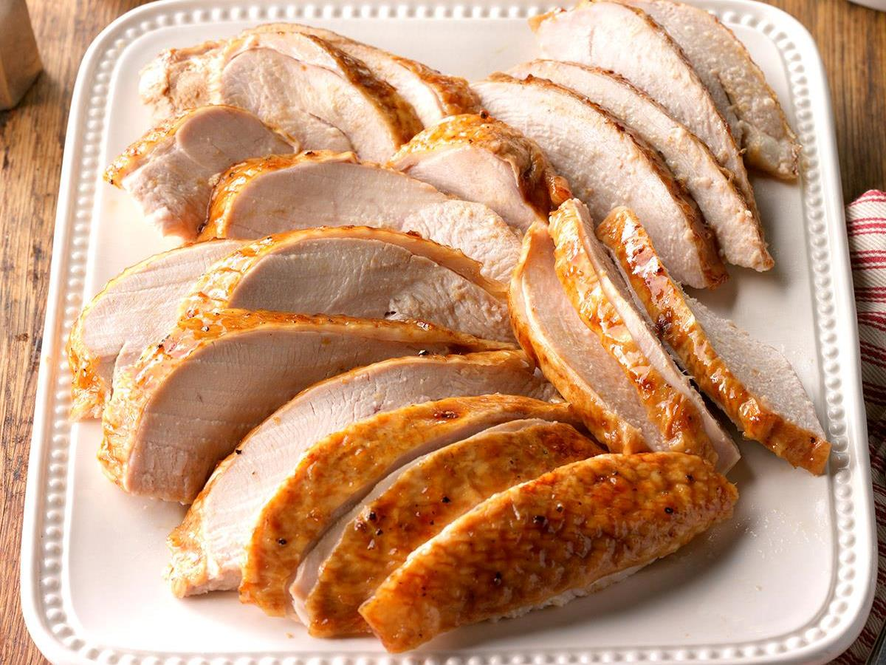

Christmas Turkey

Description
A family christmas favourite apriocot glazed turkey. Equally good served hot on Christmas Day or cold on Boxing Day
Ingredients
- 2.5kg turkey buffe, thawed
- 1/2 cup apricot jam
- 1/4 cup orange juice
- 1 tbsp brown sugar
- 1 tbsp brandy
- 1 tsp beef stock powder
- 2 packets roast gravy
- 1 1/2 cups water
- 1/2 cup orange juice, extra
- 1 tbsp brandy, extra
- 1 tbsp cream
Steps
- Cook turkey according to packet instructions
- Combine jam, orange juice, brown sugar, brandy and stock power
- Pour mixture over the turkey for the final 30 minutes of cooking, brushing frequently with the glaze
- Combine in saucepan the remaining ingredients, except the cream
- Bring to the boil while stirring
- Reduce heat & simmer for 1 minute
- Stir in cream